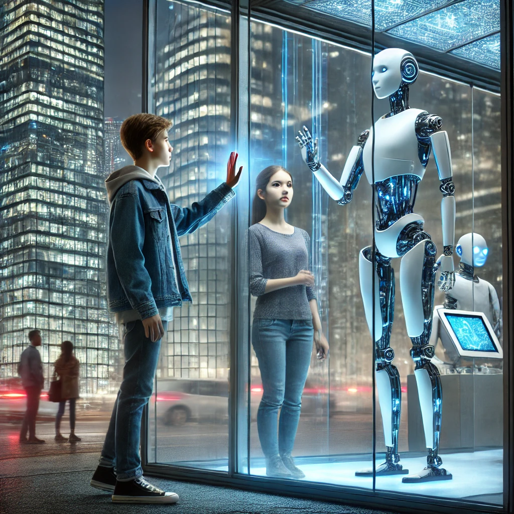

Etudiant 2-ème année BUT Génie Electrique et Informatique Industrielle | Parcours Electronique et Systèmes Embarqués
Je suis à la recherche d'un stage
en électronique de 8 à 12 semaines
à partir du 28 avril 2025
Etudiant dans le domaine du Génie électrique et Informatique Industrielle
en parcours Electronique et Systèmes Embarqués à l'IUT-1 de Grenoble,
Je me passionne pour l'électronique, l'informatique et les nouvelles technologies en générale,
comme celles relatives aux intelligences artificielles (Deep Learning).
Je dispose de bonnes bases en électronique, informatique et même en automatisme
que j'ai acquises au cours de différents projets de réalisation lors de ma formation.
Ma curiosité m'a aussi amené à acquérir des compétences exploitables dans le développement web
et la conception d'applications graphiques simples en python avec kivy;
en C# avec Xamarin forms (désormais remplacé par .NET MAUI) et en C++ avec Windows forms grâce à des
formations en ligne sur le site Udemy.
Formation :
2023-2026 : Bachelor Universitaire de Technologies (BUT)
Génie Electrique et Informatique Industrielle (GEII)
2017-2023 : Baccalauréat D ( Mathématiques et Sciences de la nature)
|
Le développement web : C'est une activité que je pratique souvent et qui m'a apporté de bonnes connaissances du domaine de la conception web. J'ai par ailleurs pu réaliser les versions webs de mon portfolio comme celui que vous parcourez actuellement. |
|  | |
|
L'intelligence artificielle : Ce domaine connaissant une grande croissance dans le monde technologique
et dans le quotidien de plus |
L’objectif: Le projet Chien de Garde Électronique vise à concevoir
un système de dissuasion automatisé, capable de simuler la présence
d'un chien pour prévenir les intrusions. Il utilisera un capteur de mouvement
couplé à un microcontrôleur pour détecter les intrus et déclencher des aboiements
progressifs via un amplificateur audio. Ce dispositif intelligent sera conçu pour
être à la fois réactif et économe en énergie, offrant une solution de sécurité pratique
pour les habitations. Il permettra également de renforcer la sécurité en simulant la présence
d'un animal même en l'absence des occupants.
C'est un projet que je réalise en binôme dans le cadre d'une Situation d'Appretissage et d'Evaluation (SAE).
Conception d'un robot capable de suivre une ligne noire sur fond blanc et qui peut lancer une balle et faire tomber une cible au bon moment.
Conception d'une armoire électrique pour piloter le moteur d'un malaxeur.
Programmation d'un automate industrielle en Ladder et Grafcet pour automatiser le perçage de pièces métaliques et plastiques et le trie de ces dernières selon leurs couleurs.
Programmation d'un navigateur web basique en C++ avec visual studio et Windows Forms.
Programmation d'un jeu avec interface graphique en Python avec le module Kivy sur Pycharm
Conception HTML, CSS et Javascript de la version web de mon portfolio.